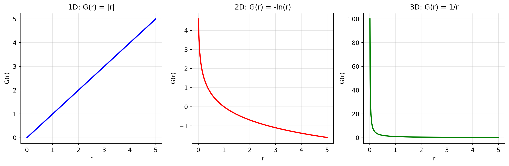
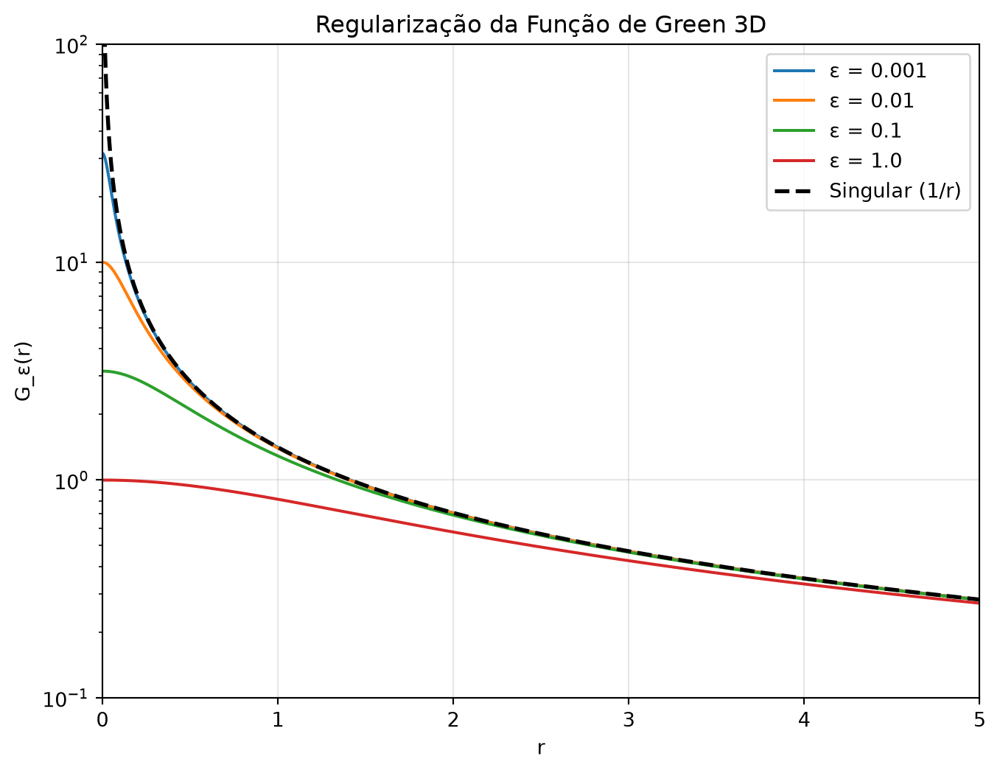
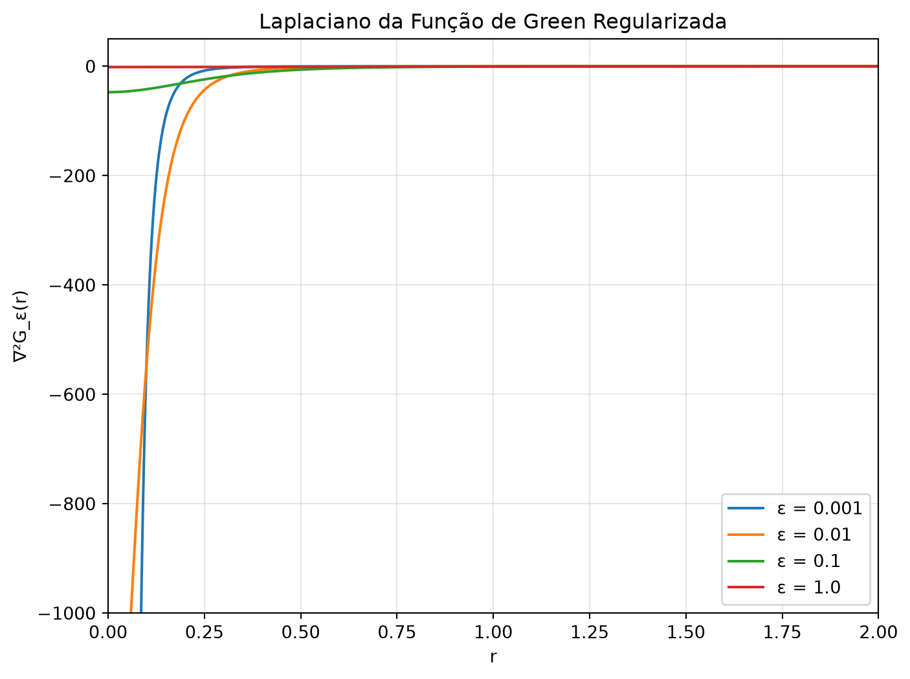

Funções de Green em 2D e ND
1 Introdução
Nesta aula, damos continuidade ao estudo das funções de Green, agora generalizando o operador laplaciano para múltiplas dimensões e explorando como a geometria do espaço determina a forma das soluções. Vamos construir funções de Green de forma global, sem decomposição em funções de base, seguindo a abordagem operacional iniciada nas aulas anteriores.
Os principais objetivos são:
- Generalizar a função de Green para o laplaciano em \(N\) dimensões
- Compreender o papel da função de mundo de Synge
- Resolver o caso especial bidimensional (solução logarítmica)
- Regularizar as divergências na origem
- Provar a propriedade de filtragem da delta de Dirac
- Interpretar fisicamente os resultados (lei de Coulomb, dimensões do espaço)
A abordagem adotada é puramente geométrica, utilizando apenas a métrica do espaço para construir as funções de Green. Isso permite uma generalização natural para espaços curvos e dimensões arbitrárias.
2 Conceitos Fundamentais
2.1 Generalização do Operador Laplaciano
Vamos estender o operador de derivada segunda escalar para múltiplas dimensões. Em \(N\) dimensões, o laplaciano é dado por: \[ \nabla^2_N = \sum_{i=1}^N \frac{\partial^2}{\partial x_i^2} \] O objetivo é encontrar a função de Green \(G_N\) que satisfaz: \[ \nabla^2_N G_N(\mathbf{x} - \mathbf{x}_0) = \delta^N(\mathbf{x} - \mathbf{x}_0) \]
A diferença crucial entre as dimensões está no comportamento das soluções. Em 2D temos um caso especial, enquanto em outras dimensões as soluções seguem leis de potência. Esta diferença está diretamente relacionada à forma como a informação se propaga no espaço.
2.2 Função de Mundo de Synge
A função de mundo de Synge é definida como: \[ \sigma(\mathbf{x}, \mathbf{x}_0) = \frac{|\mathbf{x} - \mathbf{x}_0|^2}{2} \]
Esta função é importante porque:
- É um escalar construído apenas a partir da geometria
- É independente da origem do sistema de coordenadas
- Generaliza para espaços curvos (relatividade geral)
Propriedades fundamentais do gradiente: \[ \nabla \sigma = \mathbf{x} - \mathbf{x}_0 \] \[ \nabla^2 \sigma = N \]
Estas propriedades são a base para todos os cálculos subsequentes.
3 Soluções por Lei de Potência
3.1 Ansatz Geral
Vamos buscar soluções da forma: \[ G = \sigma^\lambda \] onde \(\lambda\) é um expoente a ser determinado.
3.1.1 Gradiente e Laplaciano
Gradiente: \[ \nabla G = \lambda \sigma^{\lambda-1} (\mathbf{x} - \mathbf{x}_0) \] Laplaciano: \[ \nabla^2 G = \lambda(2\lambda - 2 + N) \sigma^{\lambda-1} \]
Este resultado é obtido aplicando o divergente ao gradiente e usando as propriedades de \(\sigma\). Observe que a dimensão \(N\) aparece naturalmente no termo \(2\lambda - 2 + N\).
3.1.2 Determinação do Expoente
Para que \(\nabla^2 G = 0\) (exceto na origem), precisamos: \[ \lambda(2\lambda - 2 + N) = 0 \]
As soluções são:
- \(\lambda = 0\) (solução trivial, constante)
- \(\lambda = 1 - \frac{N}{2}\)
Portanto, a solução não-trivial é: \[ G_N \propto \sigma^{1-N/2} = |\mathbf{x} - \mathbf{x}_0|^{2-N} \]
3.2 Casos Específicos
3.2.1 Caso 1D (\(N=1\))
\[ \lambda = 1 - \frac{1}{2} = \frac{1}{2} \] \[ G_1 \propto \sigma^{1/2} = |x - x_0| \]
Este resultado recupera a função módulo obtida na aula anterior. A derivada segunda da função módulo nos dá a delta de Dirac em uma dimensão.
3.2.2 Caso 2D (\(N=2\))
\[ \lambda = 1 - 1 = 0 \] A solução por lei de potência falha! Precisamos de uma abordagem especial.
3.2.3 Caso 3D (\(N=3\))
\[ \lambda = 1 - \frac{3}{2} = -\frac{1}{2} \] \[ G_3 \propto \sigma^{-1/2} = \frac{1}{|\mathbf{x} - \mathbf{x}_0|} \]
Interpretação física: Em 3D, a função de Green é o potencial Coulombiano! Isto mostra que a lei de Coulomb está diretamente relacionada à dimensão do espaço. O fator \(4\pi\) que aparece na normalização está associado à área da casca esférica.
3.2.4 Caso ND (\(N\neq2\))
Generalizando: \[ G_N(\mathbf{x} - \mathbf{x}_0) = \begin{cases} |\mathbf{x} - \mathbf{x}_0|^{2-N} & N \neq 2 \\ -\ln|\mathbf{x} - \mathbf{x}_0| & N = 2 \end{cases} \]
4 O Caso Especial Bidimensional
4.1 Falha da Lei de Potência
Em 2D, \(\lambda = 0\) dá \(G = \text{constante}\), que não é uma solução útil. Precisamos de um novo ansatz.
4.2 Solução Logarítmica
Inspirados no método de Frobenius (raízes repetidas), testamos: \[ G = \ln \sigma \]
4.2.1 Cálculo do Laplaciano
Gradiente: \[ \nabla (\ln \sigma) = \frac{1}{\sigma}(\mathbf{x} - \mathbf{x}_0) \] Laplaciano: \[ \nabla^2 (\ln \sigma) = \frac{2}{\sigma} - \frac{|\mathbf{x} - \mathbf{x}_0|^2}{\sigma^2} = \frac{2}{\sigma} - \frac{2\sigma}{\sigma^2} = 0 \]
A solução logarítmica funciona! Em 2D, \(G_2 = -\frac{1}{2\pi}\ln|\mathbf{r} - \mathbf{r}_0|\) é a função de Green do laplaciano. O fator \(-1/(2\pi)\) garante a normalização correta.
4.3 Interpretação Física
O logaritmo em 2D reflete o fato de que a “área” de uma casca circular é \(2\pi r\), enquanto em 3D é \(4\pi r^2\). A informação que “emana” de uma fonte pontual se espalha de forma diferente em cada dimensão.
A regularização dimensional conecta os casos 2D e ND. Podemos obter a solução logarítmica como o limite \(N \to 2\) da solução geral: \[ \lim_{N \to 2} \frac{r^{2-N} - 1}{N-2} = -\ln r \]
5 Regularização e Propriedade de Filtragem
5.1 O Problema da Origem
As soluções encontradas divergem na origem (\(\mathbf{x} = \mathbf{x}_0\)). Precisamos de um procedimento de regularização.
5.2 Regularização com Parâmetro \(\varepsilon\)
Introduzimos um parâmetro \(\varepsilon > 0\) para controlar a divergência: \[ G_\varepsilon(\mathbf{x}, \mathbf{x}_0) = (\sigma + \varepsilon)^\lambda \] Para o caso 3D (\(\lambda = -1/2\)): \[ G_\varepsilon = \frac{1}{\sqrt{\sigma + \varepsilon}} \]
5.2.1 Laplaciano Regularizado
Calculando cuidadosamente: \[ \nabla^2 G_\varepsilon = -3\varepsilon (\sigma + \varepsilon)^{-5/2} \]
Para \(\varepsilon > 0\), esta expressão é finita em todos os pontos. No limite \(\varepsilon \to 0\), recuperamos a função de Green singular. O parâmetro \(\varepsilon\) atua como um “regulador” que introduz uma distância mínima.
5.3 Integral Normalizada
5.3.1 Cálculo para 3D
Queremos calcular: \[ \lim_{\varepsilon \to 0} \int_{\mathbb{R}^3} \nabla^2 G_\varepsilon \, d^3x = -4\pi \]
5.3.1.1 Passo a Passo da Demonstração
- Coordenadas esféricas centradas em \(\mathbf{x}_0\): \[ I_\varepsilon = -3\varepsilon \int_0^{2\pi} \int_0^\pi \int_0^\infty \frac{r^2 \sin\theta}{(r^2/2 + \varepsilon)^{5/2}} \, dr \, d\theta \, d\phi \]
- Integração angular: \[ I_\varepsilon = -4\pi \cdot 3\varepsilon \int_0^\infty \frac{r^2}{(r^2/2 + \varepsilon)^{5/2}} \, dr \]
- Integração por partes (para simplificar): \[ I_\varepsilon = -4\pi \cdot 3\varepsilon \left[ \frac{r}{(r^2/2 + \varepsilon)^{3/2}} \right]_0^\infty - \int_0^\infty \frac{1}{(r^2/2 + \varepsilon)^{3/2}} \, dr \]
- Substituição \(r = \sqrt{2\varepsilon}\tan\theta\): \[ \int_0^\infty \frac{dr}{(r^2/2 + \varepsilon)^{3/2}} = \frac{1}{\varepsilon}\int_0^{\pi/2} \cos\theta \, d\theta = \frac{1}{\varepsilon} \]
- Resultado final: \[ I_\varepsilon = -4\pi \cdot 3\varepsilon \cdot \frac{1}{\varepsilon} \cdot (-1) = -4\pi \]
5.3.2 Normalização
Definimos: \[ G_3(\mathbf{r} - \mathbf{r}_0) = -\frac{1}{4\pi|\mathbf{r} - \mathbf{r}_0|} \] Então: \[ \nabla^2 G_3 = \delta^3(\mathbf{r} - \mathbf{r}_0) \]
5.4 Prova da Propriedade de Filtragem
Para mostrar que o laplaciano regularizado se comporta como uma delta de Dirac, precisamos provar: \[ \lim_{\varepsilon \to 0} \int_{\mathbb{R}^3} \nabla^2 G_\varepsilon \, f(\mathbf{x}) \, d^3x = f(\mathbf{x}_0) \]
5.4.1 Expansão de Taylor
Expandimos \(f\) em torno de \(\mathbf{x}_0\): \[ f(\mathbf{x}) = f(\mathbf{x}_0) + \nabla f(\mathbf{x}_0) \cdot (\mathbf{x} - \mathbf{x}_0) + \frac{1}{2}(\mathbf{x} - \mathbf{x}_0)^T \nabla^2 f(\mathbf{x}_0)(\mathbf{x} - \mathbf{x}_0) + \cdots \]
5.4.2 Análise dos Termos
- Termo constante \(f(\mathbf{x}_0)\):
- Contribuição: \(-4\pi f(\mathbf{x}_0)\) (já calculado)
- Termo linear \(\nabla f(\mathbf{x}_0) \cdot (\mathbf{x} - \mathbf{x}_0)\):
- A integral angular de \(\cos\theta\) é zero
- Contribuição: \(0\)
- Termo quadrático:
- Contribui com \(\mathcal{O}(\varepsilon^{1/2}) \to 0\)
- Termos de ordem superior:
- Contribuem com \(\mathcal{O}(\varepsilon^{k/2}) \to 0\) para \(k \geq 1\)
O termo constante sobrevive ao limite \(\varepsilon \to 0\), produzindo a normalização correta. Todos os outros termos se anulam. Este é o cerne da propriedade de filtragem da delta de Dirac.
Portanto: \[ \lim_{\varepsilon \to 0} \int \nabla^2 G_\varepsilon \, f(\mathbf{x}) \, d^3x = -4\pi f(\mathbf{x}_0) \]
5.4.3 Normalização Final
Dividindo por \(-4\pi\): \[ \lim_{\varepsilon \to 0} \int \nabla^2 \left(-\frac{1}{4\pi\sqrt{\sigma+\varepsilon}}\right) f(\mathbf{x}) \, d^3x = f(\mathbf{x}_0) \] Ou seja: \[ \nabla^2 \left(-\frac{1}{4\pi|\mathbf{r} - \mathbf{r}_0|}\right) = \delta^3(\mathbf{r} - \mathbf{r}_0) \]
É importante notar que o laplaciano da função de Green singular não é bem definido na origem. A regularização é essencial para dar sentido matemático à equação \(\nabla^2(1/r) = -4\pi\delta^3(\mathbf{r})\).
6 Interpretações Físicas
6.1 Dimensão do Espaço e Lei de Coulomb
A função de Green em \(N\) dimensões: \[ G_N = \begin{cases} |\mathbf{r} - \mathbf{r}_0|^{2-N} & N \neq 2 \\ -\ln|\mathbf{r} - \mathbf{r}_0| & N = 2 \end{cases} \]
6.1.1 Consequências Físicas
- Em 3D: \(G \propto 1/r\) → Lei de Coulomb (força \(\propto 1/r^2\))
- Em 2D: \(G \propto -\ln r\) → Força \(\propto 1/r\)
- Em 4D: \(G \propto 1/r^2\) → Força \(\propto 1/r^3\)
Se a dimensão do espaço fosse diferente de 3, a força entre cargas pontuais seguiria uma lei diferente da lei de Coulomb! Isto mostra que a lei do inverso do quadrado é uma consequência direta da geometria tridimensional do espaço.
7 Visualizações Computacionais
Code
import numpy as np
import matplotlib.pyplot as plt
from scipy.special import gamma
# Definição das funções de Green
def G_1D(x, x0=0):
"""Função de Green em 1D"""
r = np.abs(x - x0)
return r
def G_2D(r, x0=0):
"""Função de Green em 2D (logarítmica)"""
r = np.abs(r - x0)
# Adiciona um pequeno epsilon para evitar divergência
return -np.log(r + 1e-10)
def G_3D(r, x0=0):
"""Função de Green em 3D"""
r = np.abs(r - x0)
return 1.0 / (r + 1e-10)
# Criar figura
fig, axes = plt.subplots(1, 3, figsize=(12, 4))
x = np.linspace(0.01, 5, 1000)
# Plot 1D
axes[0].plot(x, G_1D(x), "b-", linewidth=2)
axes[0].set_xlabel("r")
axes[0].set_ylabel("G(r)")
axes[0].set_title("1D: G(r) = |r|")
axes[0].grid(True, alpha=0.3)
# Plot 2D
axes[1].plot(x, G_2D(x), "r-", linewidth=2)
axes[1].set_xlabel("r")
axes[1].set_ylabel("G(r)")
axes[1].set_title("2D: G(r) = -ln(r)")
axes[1].grid(True, alpha=0.3)
# Plot 3D
axes[2].plot(x, G_3D(x), "g-", linewidth=2)
axes[2].set_xlabel("r")
axes[2].set_ylabel("G(r)")
axes[2].set_title("3D: G(r) = 1/r")
axes[2].grid(True, alpha=0.3)
plt.tight_layout()
plt.show()
Code
def G_3D_regularizada(r, epsilon=0.1):
"""Função de Green 3D regularizada"""
r_safe = r + 1e-10
return 1.0 / np.sqrt(r_safe**2 / 2 + epsilon)
# Valores de epsilon para testar
epsilons = [0.001, 0.01, 0.1, 1.0]
r = np.linspace(0, 5, 1000)
plt.figure(figsize=(8, 6))
for eps in epsilons:
G_reg = G_3D_regularizada(r, eps)
plt.plot(r, G_reg, label=f"ε = {eps}")
# Função sem regularização (singular em r=0)
r_safe = np.linspace(0.01, 5, 1000)
G_sing = 1.0 / np.sqrt(r_safe**2 / 2)
plt.plot(r_safe, G_sing, "k--", linewidth=2, label="Singular (1/r)")
plt.xlabel("r")
plt.ylabel("G_ε(r)")
plt.title("Regularização da Função de Green 3D")
plt.legend()
plt.grid(True, alpha=0.3)
plt.yscale("log")
plt.xlim(0, 5)
plt.ylim(0.1, 100)
plt.show()
Code
def laplaciano_G_regulado(r, epsilon=0.1):
"""Laplaciano da função de Green regularizada em 3D"""
return -3 * epsilon / (r**2 / 2 + epsilon) ** (5 / 2)
r = np.linspace(0, 3, 1000)
epsilons = [0.001, 0.01, 0.1, 1.0]
plt.figure(figsize=(8, 6))
for eps in epsilons:
L = laplaciano_G_regulado(r, eps)
plt.plot(r, L, label=f"ε = {eps}")
plt.xlabel("r")
plt.ylabel("∇²G_ε(r)")
plt.title("Laplaciano da Função de Green Regularizada")
plt.legend()
plt.grid(True, alpha=0.3)
plt.xlim(0, 2)
plt.ylim(-1000, 50)
plt.show()
8 Tabela Resumo: Funções de Green em ND
| Dimensão | \(\lambda\) | \(G(\mathbf{r})\) | \(-\nabla^2 G\) | Interpretação |
|---|---|---|---|---|
| 1D | \(1/2\) | \(|r|\) | \(2\delta(r)\) | Módulo da distância |
| 2D | \(0\) (especial) | \(-\ln r\) | \(2\pi\delta^2(\mathbf{r})\) | Logarítmica |
| 3D | \(-1/2\) | \(1/r\) | \(4\pi\delta^3(\mathbf{r})\) | Coulomb |
| 4D | \(-1\) | \(1/r^2\) | \(?\) | Potencial de Yang-Mills |
| ND | \(1-N/2\) | \(r^{2-N}\) | \(?\) | Generalização |
A normalização da delta de Dirac em \(N\) dimensões é \(\delta^N(\mathbf{r})\), com \(\int \delta^N(\mathbf{r}) d^N r = 1\).
9 Exercícios
9.1 Exercício 1: Função de Synge
a) Mostre que \(\sigma = |\mathbf{x} - \mathbf{x}_0|^2/2\) satisfaz: \[ \nabla \sigma = \mathbf{x} - \mathbf{x}_0 \] \[ \nabla^2 \sigma = N \]
b) Calcule \(\nabla_\mu \sigma \nabla^\mu \sigma\) em notação tensorial.
c) Mostre que \(\sigma\) é independente da origem do sistema de coordenadas.
d) Qual é a importância da função de Synge em relatividade geral?
9.2 Exercício 2: Lei de Potência
a) Verifique que \(G = \sigma^\lambda\) é solução da equação \(\nabla^2 G = 0\) para \(\lambda = 1 - N/2\).
b) Mostre que para \(N=3\) esta solução recupera o potencial Coulombiano.
c) O que acontece para \(N=2\)? Explique por que a lei de potência falha neste caso.
d) Para \(N=4\), qual é a forma da função de Green? Qual seria a lei de força correspondente?
9.3 Exercício 3: Solução 2D
a) Mostre que \(G = \ln \sigma\) satisfaz \(\nabla^2 G = 0\) em 2D.
b) Calcule \(\nabla^2 G\) em \(N\) dimensões para \(G = \ln \sigma\) e verifique que só funciona para \(N=2\).
c) Qual é a função de Green normalizada em 2D? Justifique o fator de normalização.
d) Como a solução 2D se relaciona com o limite \(N \to 2\) da solução geral?
9.4 Exercício 4: Regularização 3D
a) Para \(G_\varepsilon = (\sigma + \varepsilon)^{-1/2}\), calcule \(\nabla^2 G_\varepsilon\) explicitamente.
b) Mostre que \(\lim_{\varepsilon \to 0} \nabla^2 G_\varepsilon = 0\) para \(r \neq 0\).
c) Mostre que \(\lim_{\varepsilon \to 0} \int \nabla^2 G_\varepsilon \, d^3x = -4\pi\).
d) Interprete fisicamente o papel do parâmetro \(\varepsilon\) na regularização.
9.5 Exercício 5: Propriedade de Filtragem
a) Use a expansão de Taylor para mostrar que: \[ \lim_{\varepsilon \to 0} \int \nabla^2 G_\varepsilon \, f(\mathbf{x}) \, d^3x = -4\pi f(\mathbf{x}_0) \]
b) Mostre que o termo linear em \((\mathbf{x} - \mathbf{x}_0)\) contribui com zero.
c) Mostre que os termos de ordem superior contribuem com \(\mathcal{O}(\varepsilon^{k/2}) \to 0\).
d) O que este resultado prova sobre a natureza do laplaciano da função de Green?
9.6 Exercício 6: Generalização ND
a) Mostre que \(G_N = \sigma^{1-N/2}\) satisfaz \(\nabla^2 G_N = 0\) para \(N \neq 2\).
b) Calcule a constante de normalização para \(N > 2\) em termos da função Gamma.
c) Mostre que a normalização é \(\propto (N-2)\).
d) O que acontece com a normalização no limite \(N \to 2\)?
9.7 Exercício 7: Interpretação Física
a) Explique por que a lei de Coulomb seria diferente em um universo com 4 dimensões espaciais.
b) Em teoria de cordas, como dimensões extras poderiam ser detectadas?
c) O que a precisão da lei de Coulomb nos diz sobre a geometria do espaço?
d) Como a regularização dimensional se relaciona com a detecção de dimensões extras?
9.8 Exercício 8: Implementação Numérica
a) Escreva um código Python que calcule numericamente o laplaciano da função de Green regularizada.
b) Verifique que a integral se aproxima de \(-4\pi\) para \(\varepsilon \to 0\).
c) Plote o laplaciano para diferentes valores de \(\varepsilon\) e discuta o comportamento.
d) Como a escolha do método de integração numérica afeta a precisão do resultado?
9.9 Exercício 9: Conexão com Eletromagnetismo
a) Como a função de Green 3D se relaciona com o potencial eletrostático?
b) Derive a lei de Coulomb a partir da função de Green.
c) Qual seria a lei de força em 2D? Em 4D?
d) Como a lei de Gauss se generaliza para dimensões arbitrárias?
9.10 Exercício 10: Caso 1D Detalhado
a) Mostre que em 1D, \(G(x) = |x|/2\) satisfaz \(G''(x) = \delta(x)\).
b) Qual é a interpretação física da função de Green em 1D?
c) Como a solução 1D se relaciona com o caso geral \(N=1\)?
d) Por que em 1D o potencial não decai com a distância?
9.11 Exercício 11: Método de Frobenius
a) Explique o método de Frobenius para equações diferenciais com raízes repetidas.
b) Como este método se aplica ao caso 2D da função de Green?
c) Mostre que a solução logarítmica surge naturalmente do método de Frobenius.
d) Compare com a regularização dimensional para obter o mesmo resultado.
9.12 Exercício 12: Aplicações Práticas
a) Em que áreas da física as funções de Green em diferentes dimensões são utilizadas?
b) Como a função de Green 2D aparece em sistemas de vórtices?
c) Qual é a relação entre funções de Green e equações de difusão?
d) Como a regularização de funções de Green é usada em teoria quântica de campos?
10 Conclusão
Nesta aula, generalizamos a construção de funções de Green para o laplaciano em \(N\) dimensões, destacando o papel especial da dimensão 2. Vimos que:
- A função de Synge \(\sigma\) fornece a base geométrica para todas as construções
- A lei de potência \(G = \sigma^\lambda\) funciona para \(N \neq 2\)
- O caso 2D requer uma solução logarítmica especial
- A regularização é essencial para lidar com divergências na origem
- A propriedade de filtragem prova que o laplaciano da função de Green se comporta como uma delta de Dirac
- A interpretação física conecta a dimensão do espaço à lei de Coulomb
Estes resultados mostram como a geometria do espaço determina as leis físicas fundamentais, e como ferramentas matemáticas como a regularização dimensional nos permitem explorar dimensões além das usuais.
A próxima aula abordará funções de Green dependentes do tempo, introduzindo conceitos de causalidade e propagação de ondas.